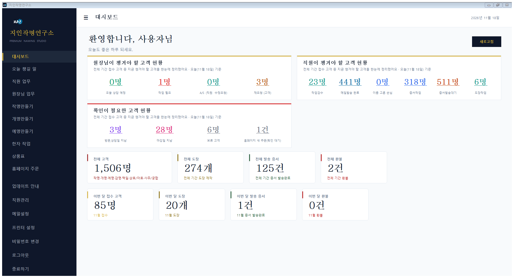
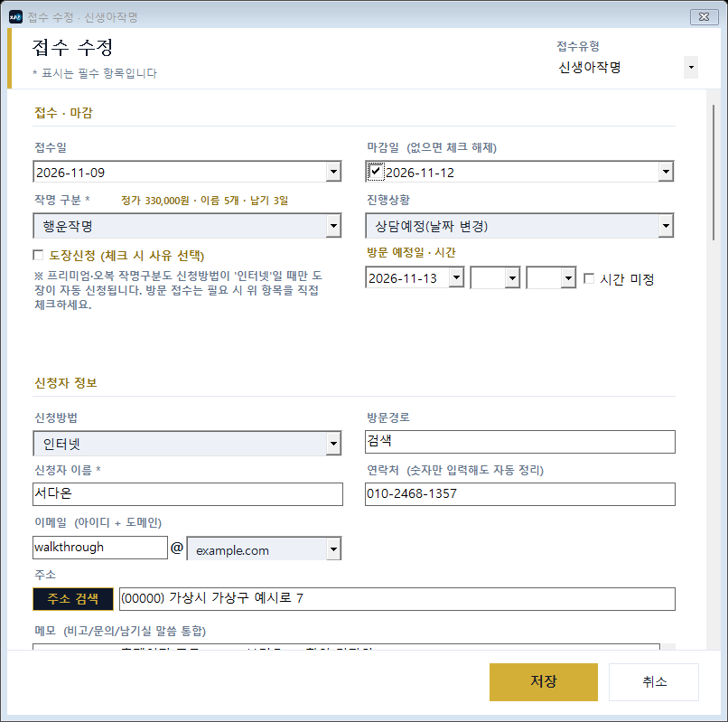
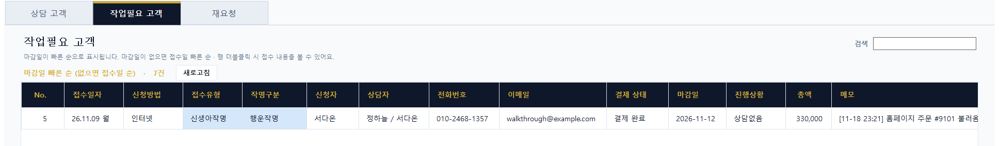
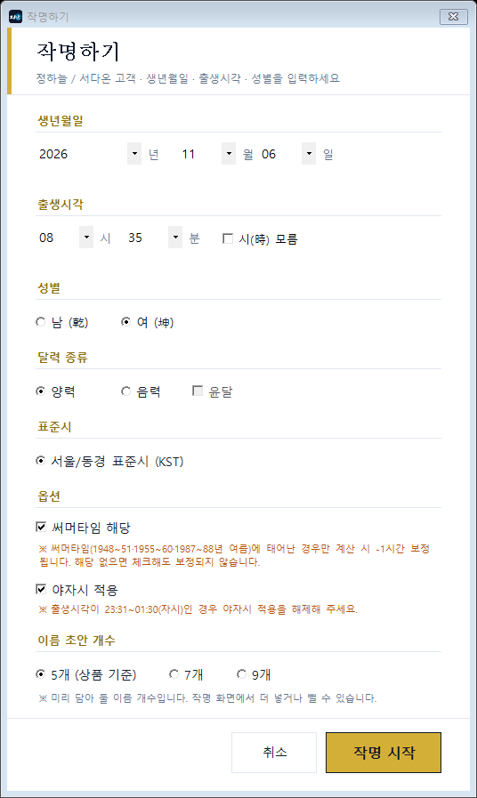
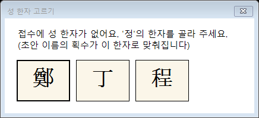
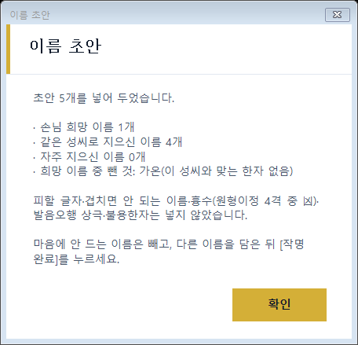
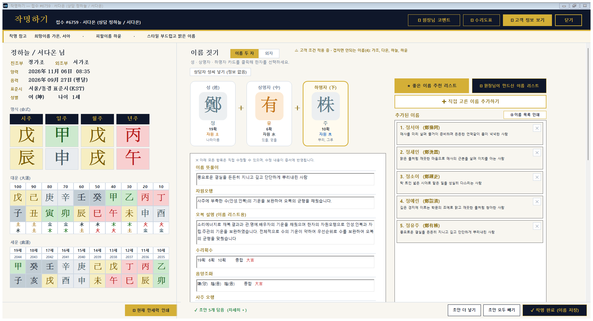
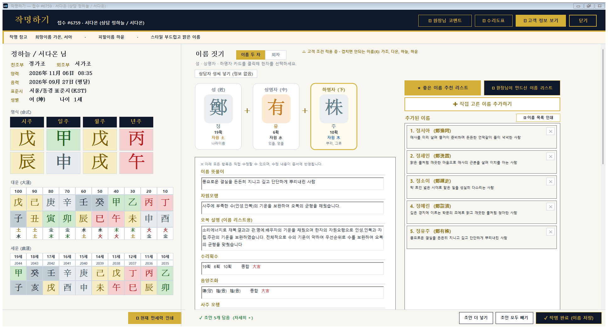
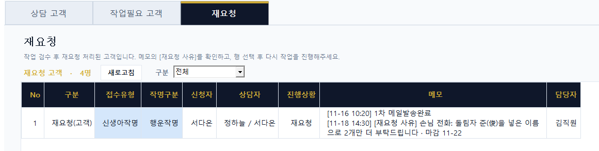

지금 보시는 것: 원장님 가이드
영상으로 보기
3분 18초 · 자막과 음성원장님 업무: 상담 · 작명 · 다시 짓기
원장님이 누르시는 것
작명 완료 뒤의 검수·메일·이름 확정·증서·발송은 직원이 맡아요| 일 | 어디서 | 누르는 순서 |
|---|---|---|
| 상담 | 원장님 업무 → 상담 고객 (직원이 예약을 받아 올려 둔 손님) | 상담 자료→상담→줄을 두 번 눌러 상담완료 |
| 작명 | 원장님 업무 → 작업필요 고객 | 작명→작명 시작→작명 완료 |
| 다시 짓기 | 원장님 업무 → 재요청 | 작명→작명 완료 |
1
대시보드
원장님
왼쪽 위가 원장님 칸이에요
- 오늘 상담 예정: 오늘 방문·전화 상담 손님
- 작업 필요: 작명할 손님
- A/S(직원 수정요청): 직원이 고쳐 달라고 한 손님
- 재요청(고객): 손님이 다시 지어 달라고 한 손님
숫자를 누르면 그 손님들이 바로 열려요. 왼쪽 메뉴 원장님 업무로도 들어가요.

2
상담
원장님
상담 손님은 상담 고객 탭에 모여요
직원이 상담 예약을 받아 접수에 상담예정(방문 예정일)이나 전화상담으로 넣어 두면 이 탭에 올라와요.
상담 고객→상담 자료→상담완료(작업필요)
- 상담 자료: 목록에 있는 손님(기본은 오늘 방문)의 신청서 요청 사항과 가족 만세력이 인쇄 미리보기로 열려요. Ctrl을 누른 채 여러 줄을 고르면 그 손님만 나와요.
- 주간 예약표: 요일·시간별 예약과 예약금 입금 여부를 봐요.
- 상담 뒤 줄을 두 번 눌러 진행상황을 골라요. 작명이 필요하면 상담완료(작업필요), 상담만으로 끝나면 상담완료(작업없음).
- 안 오셨거나 날짜가 바뀌면 상담예정(날짜 변경)이나 보류(오지 않음·연락 안 됨).

3
작명
1원장님
작업필요 고객 탭에서 손님을 골라요
작업필요 고객→손님 줄 선택→작명
- 마감일이 빠른 순서예요. 마감이 지난 손님은 맨 위에 와요.
- 개명·예명·감명·택일 손님은 줄에 그 이름의 버튼이 나와요.

2원장님
작명 시작 창에서 사주 기준을 확인해요
초안 개수 선택→작명 시작
- 생년월일, 태어난 시각, 성별이 채워져 있어요.
- 써머타임과 야자시 적용을 확인해요. 여기서 정한 대로 이름 리스트와 증서에도 쓰여요.
- 맨 아래 이름 초안 개수에서 5 · 7 · 9 중에 골라요. 상품표 개수가 미리 골라져 있어요.
- 30분 정각은 앞 시진, 31분부터 다음 시진이에요.
- 접수에 성 한자가 없으면 먼저 골라요.


3프로그램원장님
이름이 벌써 담겨 있어요. 빼고, 더하고, 작명 완료
초안 더 넣기→작명 완료 (이름 저장)
- 초안은 원장님이 지어 오신 이름과 자주 쓰신 한자가 기준이에요. 손님 희망 이름, 같은 성씨로 지으신 이름, 자주 지으신 이름 순서로 고르고, 모자라면 자주 쓰신 한자로 조합해 채워요.
- 피할 글자, 겹치면 안 되는 이름, 흉수, 발음오행 상극, 불용한자는 넣지 않아요.
- 마음에 안 드는 이름만 빼요. 나머지는 그대로 남아요.
- 초안을 더 받고 싶으면 초안 더 넣기. 누를 때마다 겹치지 않는 이름이 2개씩 더 담겨요(쌍둥이는 아이마다 2개씩).
- 남겨 둔 초안 옆에 직접 지은 이름을 한두 개 더 담아도 돼요.
- 상품표 개수보다 적게 담으면 작명 완료 때 "이름 N개가 필요한데…"라고 알려 줘요.
- 작명 완료를 누르기 전에는 손님에게 아무것도 나가지 않아요.


4원장님
직접 지으실 때
성 · 상명자 · 하명자 카드→직접 고른 이름 추가하기→작명 완료
- 예전처럼 상명자·하명자 카드를 눌러 한자를 고르고, 직접 고른 이름 추가하기를 누르면 "추가된 이름"에 담겨요. 초안을 다 지울 필요는 없어요.
- 초안 모두 빼기는 초안을 전부 지우고 싶을 때만 눌러요. 직접 넣으신 이름은 그대로 남아요.
- 이름 뜻풀이와 자원오행 글은 고쳐 쓸 수 있어요. 행운 리스트 맨 위 문장에는 첫 번째 이름의 자원오행 글이 들어가요.
- 직원에게 남길 말은 원장님 코멘트에 적어요. 직원이 검수 화면에서 봐요.

작명 화면은 전체 화면(최대화)으로 쓰세요
- 원장님 PC처럼 큰 모니터에서 최대화하면 왼쪽에 카드와 풀이, 오른쪽에 이름 리스트 버튼·[직접 고른 이름 추가하기]·추가된 이름이 나란히 보여요.
- 노트북처럼 화면이 작으면 저절로 위아래 한 줄로 쌓여요: 카드 → 이름 리스트 버튼 → [직접 고른 이름 추가하기] → 추가된 이름 → 풀이. 옆으로 넘길 일은 없고 위아래로만 내리면 돼요.
4
다시 짓기
원장님
다시 지어 달라는 손님은 재요청 탭에 모여요
재요청→손님 줄 선택→작명→작명 완료
- 구분 칸에 A/S(직원)인지 재요청(고객)인지 나와요.
- 메모의 재요청 사유를 보고 이름을 더 지어요.
- 새로 지은 이름만 다시 검수와 메일로 넘어가요.
- 다시 짓는 동안 손님이 링크를 열면 "이름을 다시 준비하고 있습니다"가 보여요.

5
감명 · 택일 · 상호 · 아호
결과 파일로 드리는 상품이에요| 상품 | 누르는 곳 | 그다음 |
|---|---|---|
| 감명 | 작업필요 고객 → 감명 | 감명 결과 화면에서 결과 파일을 붙여요 |
| 택일 · 상호 · 아호 | 작업필요 고객 → 기타(택일,상호,아호) | 결과 파일을 붙여요 |
| 재요청이 오면 | 재요청 탭 | 같은 파일 첨부 화면이 열려요. 검수를 다시 거쳐요 |
6
원장님·대표님만 할 수 있는 것
| 일 | 어디서 |
|---|---|
| 확정한 이름을 되돌리기 | 고객 접수의 진행상황 이동으로 메일발송완료나 재요청으로 돌려요. 확정 이름이 지워지고 손님 링크가 다시 열려요 |
| 홈페이지 관리자 비밀번호 바꾸기 | 왼쪽 메뉴 홈페이지 주문 |
| 상품표 고치기 | 왼쪽 메뉴 상품표. 정가, 이름 개수, 납기 |
| 한자 사전 고치기 | 왼쪽 메뉴 한자 작업. 고치면 진행 중인 접수에도 반영돼요 |
그림 속 손님은 모두 지어낸 사람이에요.